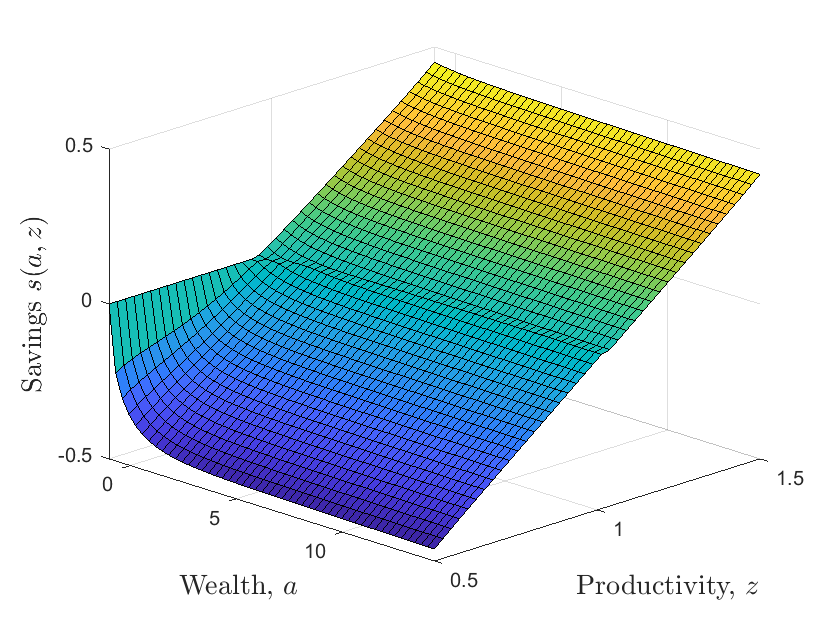
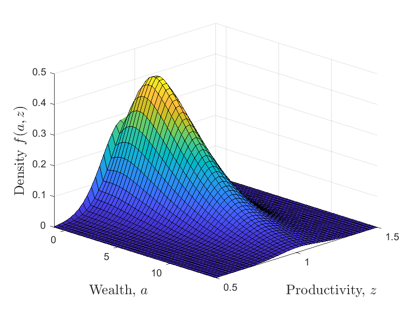
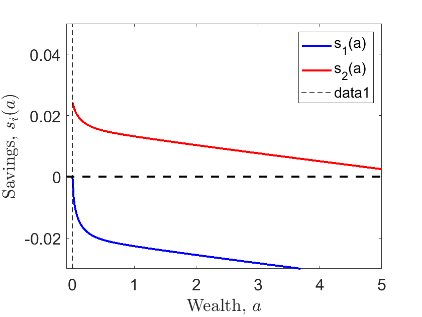
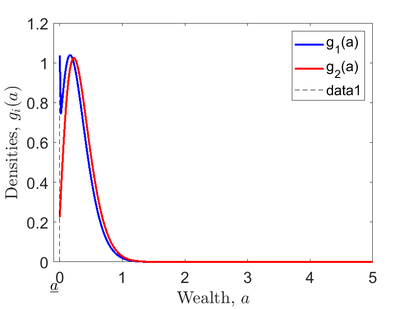

ECON 5360 Tutorial 6#
Heterogeneous Agent Model in Continous Time#
DING Minjie, Spring 2025#
We will discuss Aiyagari model in continous time in this tutorial. The main reference is “Income and Wealth Distribution in Macroeconomics: A Continuous-Time Approach”.
Basic Idea in Continous Time
Income in Ornstein-Uhlenbeck Process
Evolution Matrix of Productivity (a Ornstein-Uhlenbeck Process)
Evolution Matrix of Asset
Hamilton–Jacobi–Bellman equation
Kolmogorov Forward Equation/ Fokker-Planck Equation
Income in Poisson Process
1. Basic Idea in Continous Time#
In discrete case, we have income grid and income transition on one dimension. On the other dimension, we have asset grid, combined with income process, we get: asset transition (asset policy function), and know how asset and consumption affect value function.
Similarly, in continous case, we need both.
On the one dimension, we need income grid and its transition. Sometimes, income is determined by labor productivity, so we use productivity \(z\) here, in consistent with literature. Two popular methods to construct continous income are: Poisson Process and Ornstein-Uhlenbeck Process.
On the other dimension, we need to know how productivity and asset affect value function. In continous case, we use Differential.
When asset increase from low to high, value function is expected to increase, and we use forward difference to approximate it. That is, use high value function and current value function difference to approximate the increasing process: $\( v'_j(a_i) \approx \frac{v_{i+1,j} - v_{i,j}}{\Delta a} \)$
When asset decrease from high to low, value function is expected to decrease, we use backward difference to approximate it. That is, use current value and a low value to approximate the decreasing process: $\( v'_j(a_i) \approx \frac{v_{i,j} - v_{i-1,j}}{\Delta a} \)$
It the same for productivity.
When productivity increase from low to high, value function is expected to increase, and we use forward difference to approximate it: $\( v'_i(z_j) \approx \frac{v_{i,j+1} - v_{i,j}}{\Delta z} \)$
When productivity decrease from high to low, value function is expected to decrease, we use backward difference to approximate it: $\( v'_i(z_j) \approx \frac{v_{i,j} - v_{i,j-1}}{\Delta z} \)$
Note the subscript here, \(i\) is for different asset \(a\), \(j\) is for different productivity \(z\).
2. Income in Ornstein-Uhlenbeck Process#
The Ornstein-Uhlenbeck (O-U) process is a type of stochastic process often used to model mean-reverting behavior. It can be described by the following stochastic differential equation (SDE):
where:
\(X_t\) is the value of the process at time \(t\).
\(dW_t\) represents the increment of a Wiener process (or Brownian motion).
\(E(X_t)\): The long-term mean level to which the process reverts.
\(\theta\): The speed of mean reversion, indicating how quickly the process returns to the mean after a disturbance.
\(\sigma\): The volatility of the process, representing the intensity of random fluctuations.
The O-U process can be solved analytically. The solution to the SDE is given by:
Here, \(X_0\) is the initial value of the process.
To find the variance, we need to calculate \(\text{Var}(X_t)\), which is defined as:
The stochastic integral term \(\int_0^t e^{-\theta(t-s)} dW_s\) is a key component. The variance of this term can be calculated using the properties of Itô integrals:
Evaluating this integral gives:
Hence, the variance of \(X_t\) can be derived as:
As \(t \to \infty\), the term \(e^{-2\theta t}\) approaches zero, leading to the steady-state variance:
3. Evolution Matrix of Productivity (a Ornstein-Uhlenbeck Process)#
Now suppose the productivity \(z_t\) follows Ornstein-Uhlenbeck process.
For the convenience of expression, define the drift term as:
Then the Ornstein-Uhlenbeck process can be written as:
For the convenience of expression, we call variance as:
1. When \(z_t\) is larger than \(\mathbb{E}(z_t)\),
\(\mu = \theta (\mathbb{E}(z_t)-z_t) < 0\),
\(dz_t = \mu dt + \sigma dW_t\) has high possibility to be negative, and \(z_t\) tends to decrease from high to low.
Define Chi (\(\chi \)):
The first term, \(-\frac{\min(\mu, 0)}{\Delta z}\), when productivity \( z \) is above its mean, this term is positively large.
When put it in lower diagonal, it reflect tendency to change from higher to lower index of grid, or from high productivity to lower productivity, that is to revert back to the mean.
2. When \(z_t\) is smaller than \(\mathbb{E}(z_t)\),
\(\mu = \theta (\mathbb{E}(z_t)-z_t) > 0\),
\(dz_t = \mu dt + \sigma dW_t\) has high possibility to be positive, and \(z_t\) tends to increase from low to high.
Define Zeta (\( \zeta \)):
When put upper lower diagonal, it reflect tendency to change from low to high index of grid, or from lower productivity to higher productivity, that is to revert back to the mean.
3. When \(z_t\) is close to \(\mathbb{E}(z_t) \):
Suppose the difference interval is not small enough to capture the difference between \(z_t\) and \(\mathbb{E}(z_t)\), \(z_t\) stay at the original state.
Define YY (\( \text{yy} \))
When put it in the diagonal, it means \(z_t\) stay at the original state.
Finally, we can construct a sparse matrix to show transition of productivity.
Chi (\( \chi \)): used for the lower diagonal of the sparse matrix.
YY (\( \text{yy} \)): forms the main diagonal of the sparse matrix.
Zeta (\( \zeta \)): used for the upper diagonal of the sparse matrix.
Remember the spdiags function introduced before, we can use ‘spdiags’ to get sparse matrix.
Before construct the sparse matrix, we set parameters, and the grids. The following three code cells are:
Parameters
Grids
Sparse Matrix for Productivity
cd"C:\Users\ading\A_TA_Notes"
pwd
ans = 'C:\Users\ading\A_TA_Notes'
clear all;
close all;
format long; % Set long format for outputs
tic; % Start timing the execution
%% PARAMETERS
% household and firm
ga = 2; % CRRA utility with parameter gamma
rho = 0.05; % Discount rate
alpha = 0.35; % Capital share of production function F = K^alpha * L^(1-alpha)
delta = 0.1; % Capital depreciation rate
% productivity and O-U process
zmean = 1.0; % Mean of the Ornstein-Uhlenbeck (O-U) process (in levels)
sig2 = (0.10)^2; % Variance of the O-U process (sigma^2)
Corr = exp(-0.3); % Persistence of the O-U process (-log(Corr))
the = -log(Corr); % Calculate the rate of mean reversion
Var = sig2/(2*the); % Variance for the O-U process
% Iteration parameters
maxit = 100; % Maximum number of iterations in the HJB loop
maxitK = 100; % Maximum number of iterations in the K loop
crit = 10^(-6); % Convergence criterion for HJB loop
critK = 1e-5; % Convergence criterion for K loop
Delta = 1000; % Delta in HJB algorithm
K = 3.8; % Initial aggregate capital; should be close to the solution for convergence
relax = 0.99; % Relaxation parameter for the algorithm
%% Grid
% grid dimension
J = 40; % Number of points for productivity (z)
I = 100; % Number of points for wealth (a)
% productivity
zmin = 0.5; % Minimum value of z
zmax = 1.5; % Maximum value of z
z = linspace(zmin, zmax, J); % Productivity vector (row vector of productivity values)
dz = (zmax - zmin) / (J - 1); % Step size for productivity
dz2 = dz^2; % Square of the step size for productivity
zz = ones(I, 1) * z; % Replicate productivity vector for matrix operations
% asset
amin = -1; % Borrowing constraint (minimum wealth)
amax = 30; % Maximum wealth
a = linspace(amin, amax, I)'; % Wealth vector (column vector of wealth values)
da = (amax - amin) / (I - 1); % Step size for wealth
aa = a * ones(1, J); % Replicate wealth vector for matrix operations
% Preallocation
% Finite difference approximation of the partial derivatives
Vaf = zeros(I, J); % Forward difference value function
Vab = zeros(I, J); % Backward difference value function
Vzf = zeros(I, J); % Forward difference for z
Vzb = zeros(I, J); % Backward difference for z
Vzz = zeros(I, J); % Second derivative for z
c = zeros(I, J); % Consumption matrix
%% Construct Matrix Aswitch summarizing evolution of z
mu = the * (zmean - z); % Drift term (calculated from Itô's lemma)
s2 = sig2 .* ones(1, J); % Variance term (constant for all z)
chi = -min(mu, 0) / dz + s2 / (2 * dz2); % Coefficient for upward diffusion
yy = min(mu, 0) / dz - max(mu, 0) / dz - s2 / dz2; % Coefficient for the drift term
zeta = max(mu, 0) / dz + s2 / (2 * dz2); % Coefficient for downward diffusion
% This will be the upper diagonal of the matrix Aswitch
updiag = zeros(I, 1); % Initialize upper diagonal
for j = 1:J
updiag = [updiag; repmat(zeta(j), I, 1)]; % Fill upper diagonal with zeta values
end
% This will be the center diagonal of the matrix Aswitch
centdiag = repmat(chi(1) + yy(1), I, 1); % Initialize center diagonal
for j = 2:J-1
centdiag = [centdiag; repmat(yy(j), I, 1)]; % Fill center diagonal with yy values
end
centdiag = [centdiag; repmat(yy(J) + zeta(J), I, 1)]; % Add last entry
% This will be the lower diagonal of the matrix Aswitch
lowdiag = repmat(chi(2), I, 1); % Initialize lower diagonal
for j = 3:J
lowdiag = [lowdiag; repmat(chi(j), I, 1)]; % Fill lower diagonal with chi values
end
% Add up the upper, center, and lower diagonal into a sparse matrix
Aswitch = spdiags(centdiag, 0, I*J, I*J) + spdiags(lowdiag, -I, I*J, I*J) + spdiags(updiag, I, I*J, I*J);
4. Evolution Matrix of Asset#
Given a guessed value function, we can construct evolution matrix of asset, similar to that of productivity.
An important distinction between continous case and discrete case lie in FOC condition.
Assume CRRA utility, so the two first order conditions are
continuous time
discrete time
The first-order condition of continous time is “static” in the sense that it only involves contemporaneous variables. Given (a guess for) the value function \(v_j(a)\) it can be solved by hand. In contrast, the discrete-time condition defines the optimal choice only implicitly.
From the FOC condition, we can get \(c\), since value function is given.
Then we can get saving \(s\) from budget constraint.
And \(s\) is exactly the change of asset, or “drift item” of asset, if analogous to productivity.
Then, construct the transition matrix similar to that of productivity.
5. Hamilton–Jacobi–Bellman equation#
The HJB equation in this case is:
\(\frac{1}{\Delta}\) : a very small interval
\(v^{n}_{i,j}\) : old guessed value function
\(v^{n+1}_{i,j}\): new value function from iteration
\(\rho\) : discount rate
\(\frac{v_{i+1, j}^{n+1}-v_{i, j}^{n+1}}{\Delta a}\) : forward difference with respect to asset
\((s_{i, j, F}^n)^{+}\) : positive change of asset (positive saving)
\(\frac{v_{i+1, j}^{n+1}-v_{i, j}^{n+1}}{\Delta a}(s_{i, j, F}^n)^{+}\) : value gained from increasing saving
\(\frac{v_{i, j}^{n+1}-v_{i-1, j}^{n+1}}{\Delta a}(s_{i, j, B}^n)^{-}\) : value gained from decreasing saving
\(\frac{v_{i+1, j}^{n+1}-v_{i, j}^{n+1}}{\Delta z}(\mu_{i, j, F}^n)^{+}\) : value gained from increasing productivity
\(\frac{v_{i, j}^{n+1}-v_{i-1, j}^{n+1}}{\Delta z}(\mu_{i, j, B}^n)^{-}\) : value gained from decreasing productivity
\(\frac{\sigma_j^2}{2} \frac{v_{i, j+1}^{n+1}-2 v_{i, j}^{n+1}+v_{i, j-1}^{n+1}}{(\Delta z)^2}\) : value gained from volatility
Rearrange HJB equation, and collect terms with the same subscripts on the right-hand side.
Let: $\( AA = x_{i,j} + y_{i,j} + z_{i,j} \)\( \)\( Aswitch = \chi_{j} + v_j + \zeta_j \)\( \)\( A = AA + Aswitch \)$
Then put \(v^n_{i,j}\) and \(v^{n+1}_{i,j}\) on different hand, we get:
Given guessed value function \(v^n_{i,j}\) and solved \(c_{i,j}^n\) from it, we can then get new value function.
Then iterate, until value function converge.
Let: $\( b = u(c^n_{i,j}) + \frac{1}{\Delta} v^n_{i,j} \)\( \)\( B = (\frac{1}{\Delta} + \rho - A) \)\( Then: \)\( B v^{n+1}_{i,j} = b \)\( \)\( v^{n+1}_{i,j} = B^{-1} b \)$
Until:
6. Kolmogorov Forward Equation/ Fokker-Planck Equation#
The Kolmogorov Equation describes the time evolution of the probability density function of a stochastic process.
In stationary equilibrium, changes from productivity or saving will not affect the distribution of asset, (will not change probability density function of asset). Let \(gg\) be the distribution, then:
where \(A\) is what we defined above, denoting effect on value function from productivity change and saving change.
Here comes the main loop code.
%INITIAL GUESS
r = alpha * K^(alpha-1) -delta; %interest rates
w = (1-alpha) * K^(alpha); %wages
v0 = (w*zz + r.*aa).^(1-ga)/(1-ga)/rho;
v = v0;
dist = zeros(1,maxit);
for iter=1:maxitK
disp('Main loop iteration')
disp(iter)
% HAMILTON-JACOBI-BELLMAN EQUATION %
for n=1:maxit
V = v;
% forward difference
Vaf(1:I-1,:) = (V(2:I,:)-V(1:I-1,:))/da;
Vaf(I,:) = (w*z + r.*amax).^(-ga); %will never be used, but impose state constraint a<=amax just in case
% backward difference
Vab(2:I,:) = (V(2:I,:)-V(1:I-1,:))/da;
Vab(1,:) = (w*z + r.*amin).^(-ga); %state constraint boundary condition
I_concave = Vab > Vaf; %indicator whether value function is concave (problems arise if this is not the case)
%consumption and savings with forward difference
cf = Vaf.^(-1/ga);
sf = w*zz + r.*aa - cf;
%consumption and savings with backward difference
cb = Vab.^(-1/ga);
sb = w*zz + r.*aa - cb;
%consumption and derivative of value function at steady state
c0 = w*zz + r.*aa;
Va0 = c0.^(-ga);
% dV_upwind makes a choice of forward or backward differences based on
% the sign of the drift
If = sf > 0; %positive drift --> forward difference
Ib = sb < 0; %negative drift --> backward difference
I0 = (1-If-Ib); %at steady state
%make sure backward difference is used at amax
% Ib(I,:) = 1; If(I,:) = 0;
%STATE CONSTRAINT at amin: USE BOUNDARY CONDITION UNLESS sf > 0:
%already taken care of automatically
Va_Upwind = Vaf.*If + Vab.*Ib + Va0.*I0; %important to include third term
c = Va_Upwind.^(-1/ga);
u = c.^(1-ga)/(1-ga);
%CONSTRUCT MATRIX A
X = - min(sb,0)/da;
Y = - max(sf,0)/da + min(sb,0)/da;
Z = max(sf,0)/da;
updiag=[0]; %This is needed because of the peculiarity of spdiags.
for j=1:J
updiag=[updiag;Z(1:I-1,j);0];
end
centdiag=reshape(Y,I*J,1);
lowdiag=X(2:I,1);
for j=2:J
lowdiag=[lowdiag;0;X(2:I,j)];
end
AA=spdiags(centdiag,0,I*J,I*J)+spdiags([updiag;0],1,I*J,I*J)+spdiags([lowdiag;0],-1,I*J,I*J);
A = AA + Aswitch;
if max(abs(sum(A,2)))>10^(-9)
disp('Improper Transition Matrix')
break
end
B = (1/Delta + rho)*speye(I*J) - A;
u_stacked = reshape(u,I*J,1);
V_stacked = reshape(V,I*J,1);
b = u_stacked + V_stacked/Delta;
V_stacked = B\b; %SOLVE SYSTEM OF EQUATIONS
V = reshape(V_stacked,I,J);
Vchange = V - v;
v = V;
dist(n) = max(max(abs(Vchange)));
if dist(n)<crit
disp('Value Function Converged, Iteration = ')
disp(n)
break
end
end
toc;
% FOKKER-PLANCK EQUATION %
AT = A';
b = zeros(I*J,1);
%need to fix one value, otherwise matrix is singular
i_fix = 1;
b(i_fix)=.1;
row = [zeros(1,i_fix-1),1,zeros(1,I*J-i_fix)];
AT(i_fix,:) = row;
%Solve linear system
gg = AT\b;
g_sum = gg'*ones(I*J,1)*da*dz;
gg = gg./g_sum;
g = reshape(gg,I,J);
% Update aggregate capital
S = sum(g'*a*da*dz);
disp(S)
clear A AA AT B
if abs(K-S)<critK
break
end
%update prices
K = relax*K +(1-relax)*S; %relaxation algorithm (to ensure convergence)
r = alpha * K^(alpha-1) -delta; %interest rates
w = (1-alpha) * K^(alpha); %wages
end
Main loop iteration
1
Value Function Converged, Iteration =
6
历时 132.078659 秒。
1.460525943026954
Main loop iteration
2
Value Function Converged, Iteration =
4
历时 132.195904 秒。
2.020815936779077
Main loop iteration
3
Value Function Converged, Iteration =
4
历时 132.340333 秒。
2.660255904062295
Main loop iteration
4
Value Function Converged, Iteration =
4
历时 132.462327 秒。
3.225918298182704
Main loop iteration
5
Value Function Converged, Iteration =
4
历时 132.586729 秒。
3.561827701523755
Main loop iteration
6
Value Function Converged, Iteration =
4
历时 132.726711 秒。
3.691463823642045
Main loop iteration
7
Value Function Converged, Iteration =
3
历时 132.846288 秒。
3.728256585425100
Main loop iteration
8
Value Function Converged, Iteration =
3
历时 132.934235 秒。
3.737474350115293
Main loop iteration
9
Value Function Converged, Iteration =
3
历时 133.043068 秒。
3.739684114624203
Main loop iteration
10
Value Function Converged, Iteration =
2
历时 133.111246 秒。
3.740200299833476
Main loop iteration
11
Value Function Converged, Iteration =
2
历时 133.189599 秒。
3.740336725672957
Main loop iteration
12
Value Function Converged, Iteration =
1
历时 133.240274 秒。
3.740342716315000
Main loop iteration
13
Value Function Converged, Iteration =
1
历时 133.277754 秒。
3.740367790362063
%% GRAPHS
% SAVINGS POLICY FUNCTION
figure
ss = w * zz + r .* aa - c; % Calculate savings policy function
icut = 50; % Cut-off index for plotting
acut = a(1:icut); % Wealth values to plot
sscut = ss(1:icut, :); % Savings values to plot
set(gca, 'FontSize', 14) % Set font size for axes
surf(acut, z, sscut') % Create surface plot of savings policy
view([45 25]) % Set view angle
xlabel('Wealth, $a$', 'FontSize', 14, 'interpreter', 'latex') % Label x-axis
ylabel('Productivity, $z$', 'FontSize', 14, 'interpreter', 'latex') % Label y-axis
zlabel('Savings $s(a,z)$', 'FontSize', 14, 'interpreter', 'latex') % Label z-axis
xlim([amin max(acut)]) % Set x-axis limits
ylim([zmin zmax]) % Set y-axis limits
% WEALTH DISTRIBUTION
figure
icut = 50; % Cut-off index for plotting
acut = a(1:icut); % Wealth values to plot
gcut = g(1:icut, :); % Density values to plot
set(gca, 'FontSize', 14) % Set font size for axes
surf(acut, z, gcut') % Create surface plot of wealth distribution
view([45 25]) % Set view angle
xlabel('Wealth, $a$', 'FontSize', 14, 'interpreter', 'latex') % Label x-axis
ylabel('Productivity, $z$', 'FontSize', 14, 'interpreter', 'latex') % Label y-axis
zlabel('Density $f(a,z)$', 'FontSize', 14, 'interpreter', 'latex') % Label z-axis
xlim([amin max(acut)]) % Set x-axis limits
ylim([zmin zmax]) % Set y-axis limits


7. Income in Poisson Process#
Another commonly used process to simulate productivity is Poisson Process.
We assume that income follows a two-state Poisson process \(z_t \in {z_1,z_2}\) with \(z_2>z_1\).
The process jumps from state 1 to state 2 with intensity \(\lambda_1\) and vice versa with intensity \(\lambda_2\). The two states can be interpreted as employment and unemployment so that \(\lambda_1\) is the job-finding rate and \(\lambda_2\) the job destruction rate.
New change 1: two dimension continuity \(\to\) one continuity plus one discrete
Compared with O-U process, Poisson Process is easier, since productivity/income process now is discrete, so:
we don’t need to use Upwind Differential to analyze how productivity process affect value function.
there are only two states, compared to infinite continous O-U process. So, Grid construction is different, just use what we do in discrete case.
Transition matrix is also easier.
cd"C:\Users\ading\A_TA_Notes"
pwd
ans = 'C:\Users\ading\A_TA_Notes'
clear all;
clc;
close all;
tic;
%% Parameters
% households and firms
ga = 2; % risk aversion
rho = 0.05; % discount factor
d = 0.05; % depreciation rate
al = 1/3; % share for capital
Aprod = 0.1; % A parameter for production function
% poisson income process
z1 = 1; % wage state 1
z2 = 2*z1; % wage state 2
z = [z1,z2];
la1 = 1/3; % transfer probability
la2 = 1/3;
la = [la1,la2];
z_ave = (z1*la2 + z2*la1)/(la1 + la2);
%% iteration preparation
maxit= 100; % max iteration
crit = 10^(-6); % criterion
Delta = 1000;
Ir = 40;
crit_S = 10^(-5);
rmax = 0.049;
r = 0.04;
w = 0.05;
r0 = 0.03;
rmin = 0.01;
rmax = 0.99*rho;
%% set grids
% asset
I= 1000;
amin = 0;
amax = 20;
a = linspace(amin,amax,I)';
da = (amax-amin)/(I-1);
aa = [a,a];
% productivity/income
z = [z1,z2];
zz = ones(I,1)*z;
% Preallocation
% Finite difference approximation of partial derivatives
% now we only provide this for asset, just one dimension
% no more approximation for productivity/income
dVf = zeros(I,2); % derivative value forward
dVb = zeros(I,2); % derivative value backward
c = zeros(I,2);
%% Transiton matrix
Aswitch = [-speye(I)*la(1),speye(I)*la(1);speye(I)*la(2),-speye(I)*la(2)];
New change 2: Adjusment to HJB equation
This change also results from Poisson process.
Now the HJB equation is: $\( \begin{aligned} & \frac{v_{i, j}^{n+1}-v_{i, j}^n}{\Delta}+\rho v_{i, j}^{n+1}=u\left(c_{i, j}^n\right)+v_{i-1, j}^{n+1} x_{i, j}+v_{i, j}^{n+1} y_{i, j}+v_{i+1, j}^{n+1} z_{i, j}+v_{i,-j}^{n+1} \lambda_j \quad \text { where } \\ & x_{i, j}=-\frac{\left(s_{i, j, B}^n\right)^{-}}{\Delta a} \\ & y_{i, j}=-\frac{\left(s_{i, j, F}^n\right)^{+}}{\Delta a}+\frac{\left(s_{i, j, B}^n\right)^{-}}{\Delta a}-\lambda_j \\ & z_{i, j}=\frac{\left(s_{i, j, F}^n\right)^{+}}{\Delta a} \end{aligned} \)$
Note that importantly \(x_{1, j}=z_{I, j}=0, j=1,2\) so \(v_{0, j}^{n+1}\) and \(v_{I+1, j}^{n+1}\) are never used aboveation (14) is a system of \(2 \times I\) linear equations which can be written in matrix notation as: $\( \frac{1}{\Delta}\left(v^{n+1}-v^n\right)+\rho v^{n+1}=u^n+\mathbf{A}^n v^{n+1} \)$
where \(A = x_{i,j} + y_{i,j} + z_{i,j}\)
Here is the iteration, the code iterate on interest rate.
%% iteration
for ir=1:Ir;
r_r(ir)=r;
rmin_r(ir)=rmin;
rmax_r(ir)=rmax;
KD(ir) = (al*Aprod/(r + d))^(1/(1-al))*z_ave;
% K(r+d) = alpha * A * K^alpha * Z^(1-alpha)
w = (1-al)*Aprod*KD(ir).^al*z_ave^(-al);
% w*Z = (1-alpha) * A * K^alpha * Z^(1-alpha)
if w*z(1) + r*amin < 0
disp('CAREFUL: borrowing constraint too loose')
end
v0(:,1) = (w*z(1) + r.*a).^(1-ga)/(1-ga)/rho;
v0(:,2) = (w*z(2) + r.*a).^(1-ga)/(1-ga)/rho;
if ir>1
v0 = V_r(:,:,ir-1);
end
v = v0;
for n=1:maxit
V = v;
V_n(:,:,n)=V;
% forward difference
dVf(1:I-1,:) = (V(2:I,:)-V(1:I-1,:))/da;
dVf(I,:) = (w*z + r.*amax).^(-ga);
%will never be used, but impose state constraint a<=amax just in case
% backward difference
dVb(2:I,:) = (V(2:I,:)-V(1:I-1,:))/da;
dVb(1,:) = (w*z + r.*amin).^(-ga);
%state constraint boundary condition
%consumption and savings with forward difference
cf = dVf.^(-1/ga);
ssf = w*zz + r.*aa - cf;
%consumption and savings with backward difference
cb = dVb.^(-1/ga);
ssb = w*zz + r.*aa - cb;
%consumption and derivative of value function at steady state
c0 = w*zz + r.*aa;
% dV_upwind makes a choice of forward or backward differences based on
% the sign of the drift
If = ssf > 0; %positive drift --> forward difference
Ib = ssb < 0; %negative drift --> backward difference
I0 = (1-If-Ib); %at steady state
c = cf.*If + cb.*Ib + c0.*I0;
u = c.^(1-ga)/(1-ga);
% Construct Matrix
X = -min(ssb,0)/da;
Y = -max(ssf,0)/da + min(ssb,0)/da;
Z = max(ssf,0)/da;
A1=spdiags(Y(:,1),0,I,I)+spdiags(X(2:I,1),-1,I,I)+spdiags([0;Z(1:I-1,1)],1,I,I);
A2=spdiags(Y(:,2),0,I,I)+spdiags(X(2:I,2),-1,I,I)+spdiags([0;Z(1:I-1,2)],1,I,I);
A = [A1,sparse(I,I);sparse(I,I),A2] + Aswitch;
% S = spdiags( Bin , d , m , n ) creates an m -by- n sparse matrix S
% by taking the columns of Bin and placing them along the diagonals
% specified by d
if max(abs(sum(A,2)))>10^(-9)
disp('Improper Transition Matrix')
%break
end
B = (1/Delta + rho)*speye(2*I) - A;
u_stacked = [u(:,1);u(:,2)];
V_stacked = [V(:,1);V(:,2)];
b = u_stacked + V_stacked/Delta;
V_stacked = B\b; % Solve system of equations
V = [V_stacked(1:I), V_stacked(I+1:2*I)];
Vchange = V - v;
v = V;
dist(n) = max(max(abs(Vchange)));
if dist(n)<crit
disp('Value Function Converged, Iteration = ')
disp(n)
break
end
end
toc;
%%%%%%%%%%%%%%%%%%%%%%%%%%
% FOKKER-PLANCK EQUATION %
%%%%%%%%%%%%%%%%%%%%%%%%%%
% Fokker–Planck equation is a partial differential equation that
% describes the time evolution of the probability density function
AT = A';
b = zeros(2*I,1);
% need to fix one value, otherwise matrix is singular
i_fix = 1;
b(i_fix)=.1;
row = [zeros(1,i_fix-1),1,zeros(1,2*I-i_fix)];
AT(i_fix,:) = row;
% Solve linear system
gg = AT\b;
g_sum = gg'*ones(2*I,1)*da;
gg = gg./g_sum;
g = [gg(1:I),gg(I+1:2*I)];
check1 = g(:,1)'*ones(I,1)*da;
check2 = g(:,2)'*ones(I,1)*da;
g_r(:,:,ir) = g;
adot(:,:,ir) = w*zz + r.*aa - c;
V_r(:,:,ir) = V;
KS(ir) = g(:,1)'*a*da + g(:,2)'*a*da;
S(ir) = KS(ir) - KD(ir);
% Update interest rate
if S(ir)>crit_S
disp('Excess Supply')
rmax = r;
r = 0.5*(r+rmin);
elseif S(ir)<-crit_S;
disp('Excess Demand')
rmin = r;
r = 0.5*(r+rmax);
elseif abs(S(ir))<crit_S;
display('Equilibrium Found, Interest rate =')
disp(r)
break
end
end
Value Function Converged, Iteration =
7
历时 2559.207783 秒。
Excess Demand
Value Function Converged, Iteration =
6
历时 2559.284936 秒。
Excess Demand
Value Function Converged, Iteration =
5
历时 2559.329921 秒。
Excess Supply
Value Function Converged, Iteration =
5
历时 2559.365684 秒。
Excess Supply
Value Function Converged, Iteration =
5
历时 2559.407666 秒。
Excess Supply
Value Function Converged, Iteration =
5
历时 2559.474438 秒。
Excess Supply
Value Function Converged, Iteration =
5
历时 2559.512612 秒。
Excess Demand
Value Function Converged, Iteration =
4
历时 2559.540382 秒。
Excess Demand
Value Function Converged, Iteration =
4
历时 2559.561689 秒。
Excess Supply
Value Function Converged, Iteration =
4
历时 2559.587406 秒。
Excess Demand
Value Function Converged, Iteration =
4
历时 2559.615126 秒。
Excess Supply
Value Function Converged, Iteration =
4
历时 2559.639559 秒。
Excess Supply
Value Function Converged, Iteration =
4
历时 2559.671812 秒。
Excess Supply
Value Function Converged, Iteration =
3
历时 2559.697452 秒。
Excess Supply
Value Function Converged, Iteration =
3
历时 2559.719571 秒。
Excess Demand
Value Function Converged, Iteration =
3
历时 2559.741214 秒。
Equilibrium Found, Interest rate =
0.044992080688477
Then plot the figure.
There are only two states in income/productivity, so we only have two lines, which is different from three-dimension figure in O-U process case.
%% plot
amax1 = 5;
amin1 = amin-0.1;
figure(1)
h1 = plot(a,adot(:,1,ir),'b',a,adot(:,2,ir),'r',linspace(amin1,amax1,I),zeros(1,I),'k--','LineWidth',2);
legend(h1,'s_1(a)','s_2(a)','Location','NorthEast');
text(-0.155,-.105,'$\underline{a}$','FontSize',16,'interpreter','latex');
line([amin amin], [-.1 .08],'Color','Black','LineStyle','--');
xlabel('Wealth, $a$','interpreter','latex');
ylabel('Savings, $s_i(a)$','interpreter','latex');
xlim([amin1 amax1]);
ylim([-0.03 0.05]);
set(gca,'FontSize',16);
figure(2)
h1 = plot(a,g_r(:,1,ir),'b',a,g_r(:,2,ir),'r','LineWidth',2);
legend(h1,'g_1(a)','g_2(a)');
text(-0.155,-.12,'$\underline{a}$','FontSize',16,'interpreter','latex');
line([amin amin], [0 max(max(g_r(:,:,ir)))],'Color','Black','LineStyle','--');
xlabel('Wealth, $a$','interpreter','latex');
ylabel('Densities, $g_i(a)$','interpreter','latex');
xlim([amin1 amax1]);
%ylim([0 0.5])
set(gca,'FontSize',16);

警告: 忽略额外的图例条目。

Reference#
Yves Achdou, Jiequn Han, Jean-Michel Lasry, Pierre-Louis Lions, Benjamin Moll, “Income and Wealth Distribution in Macroeconomics: A Continuous-Time Approach”, The Review of Economic Studies, 2022.